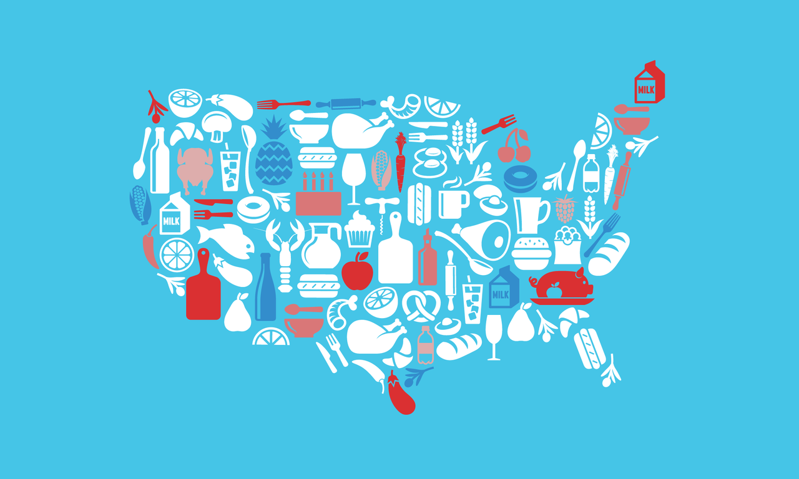

According to the State of Food Security and Nutrition in the World 2018, 821 million people went hungry last year. Hunger is the feeling of weakness caused by the lack of food. We all experience hunger on a daily basis. There are different types of hunger such as Physical Hunger, Emotional Hunger, Taste Hunger, and Practical Hunger. The type of hunger I am most concerned with is Physical Hunger.
Physical Hunger is when your stomach is empty and your body gives signals to your brain that you are hungry. When you are physically hunger, you may feel your stomach start to rumble, you may feel low in energy, dizzy, and you may even start to feel sick.

How it Affects Us?
Hunger along with many other daily challenges, affects us in more ways than we can imagine. When children suffer from hunger, it not only affects their physical bodies; it affects their mental states. Facing hunger can be very stressful for everyone. Having to worry about where your every meal will come from can add pressure to you and cause severe side effects such as depression, anxiety, and even PTSD (Post-Traumatic Stress Disorder).
Hunger can also lead to malnutrition. It also affects our bodies development process. It's hard to concentrate in school when you are hungry. Growling stomachs can cause children to be aggressive and bad-tempered. These issues can distract students from their work, which can lead to learning delays and learning disabilities. Almost 50% of children facing hunger need to repeat a grade.
How Can Solve this Problem?
We can all end hunger together. Some ways to help may include starting a fundraiser, donating to different organizations that work for this cause, buying and consuming only what you need, and many more.
I came across an idea to put a refrigerator in the street to supply the hungery and homeless with food. I think that this idea is really helpful and really thoughful. I also think that if we placed these refrigerators around our communities and have someone monitoring it, it would really help everyone.